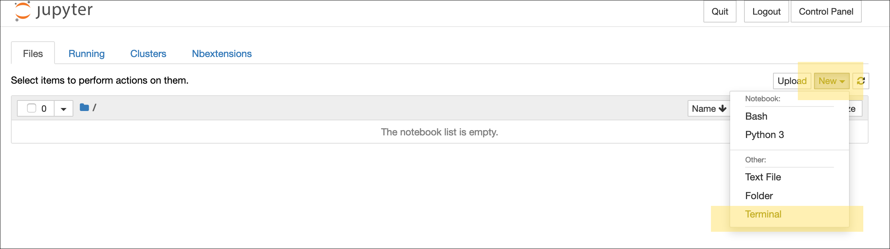

BioCoding 2019 - Toms River

Setting up for your first use
We will mostly be using Jupyter notebooks to do coding in this class. Here are some setup instructions for download these notebooks.
-
Login to the Jupyter hub at the URL given to you by your instructor.
-
Start a new terminal by going to New in the drop-down menus and selecting Terminal

-
Copy the following code to your clipboard. At the terminal paste in the command and hit enter (remember to highlight the whole line, you can double-click to highlight all):
git clone https://github.com/JasonJWilliamsNY/biocoding-2019-notebooks.gitYou should get an output that looks something like:
Cloning into 'biocoding-2019-notebooks'... remote: Enumerating objects: 88, done. remote: Counting objects: 100% (88/88), done. remote: Compressing objects: 100% (83/83), done. remote: Total 88 (delta 1), reused 85 (delta 1), pack-reused 0 Unpacking objects: 100% (88/88), done.
You are now ready to continue on with the course!